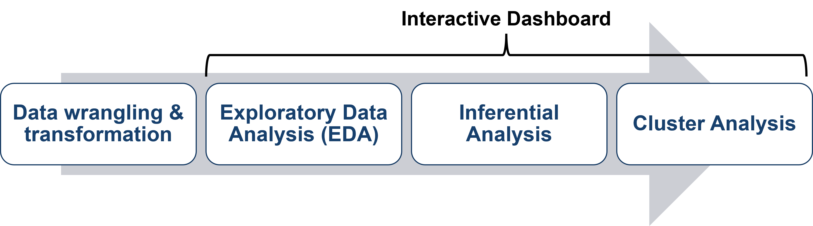
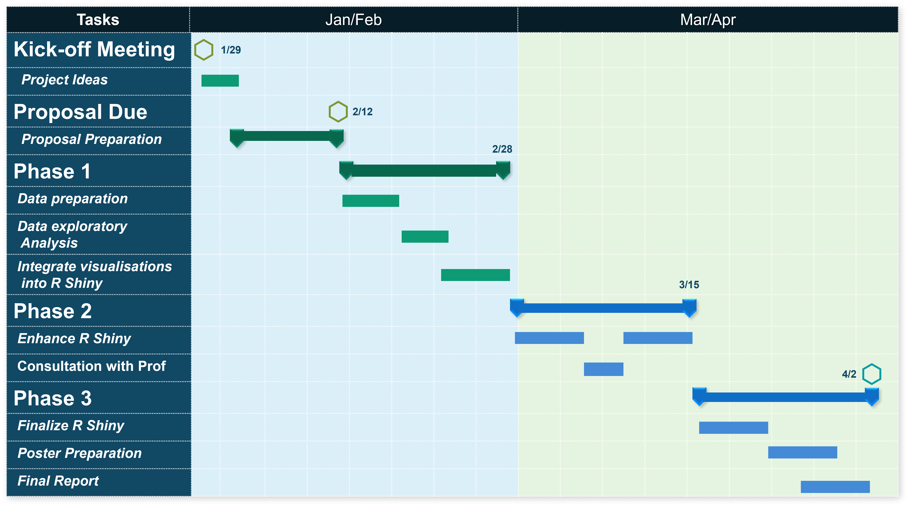

Project Proposal
Insights into Government Procurement
Project Motivation
Government Electronic Business (GeBIZ) is the Singapore Government's one-stop e-procurement portal for use by all ministries and agencies in tendering for goods and services. It encompasses all the public sector's request for proposals, quotations, and tenders which suppliers can easily search for and download relevant information packages, and thereafter submit their bids electronically.
There is a huge amount of data collected on past procurements since GeBIZ's launch in 2000 which in turn becomes a valuable source to generate powerful insights into government procurements. This treasure trove has not been widely explored or utilized (at least publicly) and through a R Shiny application, we seek to explore meaningful insights that can aide anyone looking into government procurements, be it the government agencies themselves, the suppliers keen on participating in government tenders, or even a member of the general public with an interest to see one facet of how tax dollars are spent.
Problems
While the database of historical tenders is extensive, it is not organized or visualized in a manner that allows for patterns or insights to be easily derived without having some knowledge of data analytics methods and applications.
Therefore, our R Shiny application seeks to address this and deep dive into the areas including but not limited to:
- Categorizing the different types of procurement so that past suppliers for such goods or services can be easily matched with inter-agencies.
- Identify what kinds of good or services is most often procured by each ministry or agency
- Forecast procurement expenses for each ministry or agency in the coming year
- Correlation analysis between successful bidder's Paid-up Capital (S$) and Awarded Amount (S$)
- Decision tree matrix to visualise relationship between successful bidder's primary industry, Paid-Up Capital (S$), type of product or service required, and awarded amount. For example, a project management company may be required for a large-scale project. The Singapore Standard Industrial Classification (SSIC) code is used to identify industry.
- Explore any bias in terms of frequency of using the same supplier that could highlight a need to investigate if this is with or without good reason.
- Examine trends in the peak and troughs of procurements in each agency to see if there is any truth in the hypothesis that organizations tend to spend more liberally at the end of the budget period.
Data Description
Data will be drawn mainly from data.gov.sg and supplemented by GeBiz portal and Singapore Government Directory. We will extract the open tenders put out by government agencies from years Jan 2017 to March 2022. The main dataset will consist of 7 columns such as tender description, awarded date, awarded amount, supplier and agency information. We will also be extracting 'ACRA Information on Corporate Entities' from data.gov.sg to supplement supplier's information on industry classification (Primary SSIC code & description) and paid-up capital.
Story Board

The interactive dashboard will be split into 3 sections where users will be recommended to go through the sections sequentially.
1. Exploratory Data Analysis
Merge Procurement data and ACRA information on corporate entities
Insert procurement category as stated in GeBiz website into 2022 Procurement data
Pareto Charts to show which procurement categories account for 80% of total government procurement spending
Trendline for the different procurement categories and what is the trend of the value awarded
Wordcloud / Named Entity Recognition to identify what kind of services or goods are often procured by different ministries
Treemap to breakdown the ministries spending by procurement categories and/or types of services/goods to identify top expenditure
2. Inferential Analysis
ANOVA to highlight any significant differences in mean for tenders by year/product/service/agency
Predictive forecast of procurement spending by product / service
Time-series analysis to explore the relationship between calendar year period and volume/value of awarded contracts
3. Cluster Analysis
Network Analysis of the different ministries/agencies vs suppliers to investigate their connectivity and any strong links or bias
Sankey diagram to show flows of ministries/agencies, suppliers, procurement categories and value
Decision Tree
R Packages
The software used for this project is R, and the R packages that will be applied for the dashboard application are:
| Packages | Purpose |
|---|---|
| Shiny and Shiny dashboard | To build interactive web application and visualisations |
| Spacyr | To tokenize and tag common product or services |
| Tidyverse | To tidy up and manipulate the data |
| Plotly | To create interactive graphs |
| ggplot2 | To create static graphs |
| knitr | Dynamic report generation with R |
| ggstatsplot | To create graphics with details from statistical tests |
| visNetwork | To create network visualisation |
Project Milestones
